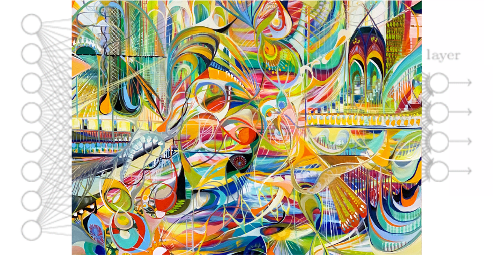
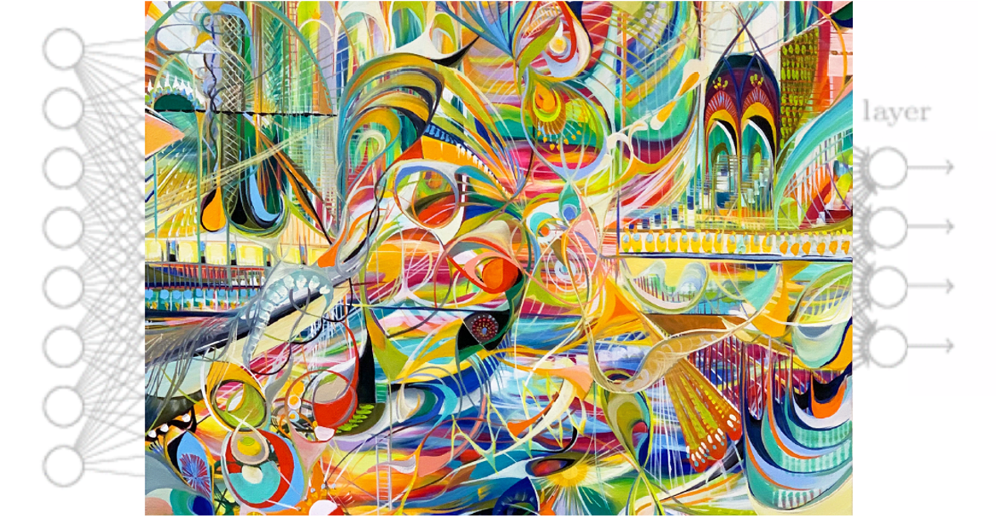
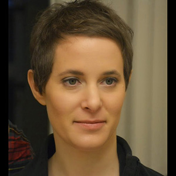
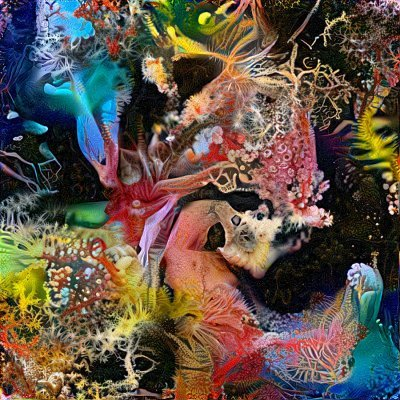
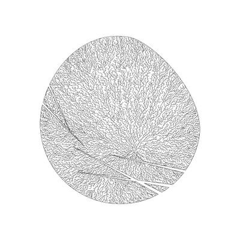
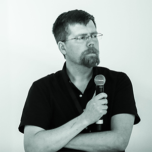
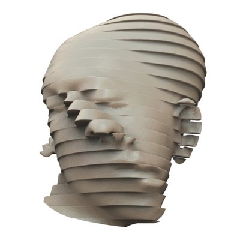

MIT 6.S192: Deep Learning for Art, Aesthetics, and Creativity


| Session # | Date | Speaker(s) | Materials |
|---|---|---|---|
| 1 | Friday 1/15/2021 |
Computational Aesthetics, Design, Art |
slides
video |
| 2 | Tuesday 1/19/2021 |

Generative Models as Data++
Nostalgia -> Art -> Creativity -> Evolution as Data + Direction |
video (Phillip)
video (Alyosha) |
| 3 | Wednesday 1/20/2021 |
Efficient GANs |
video |
| 4 | Wednesday 1/20/2021 |

The Art Of Deception - Encountering Perception as a Creative Material |
video |
| 5 | Thursday 1/21/2021 |
Painting with the Neurons of a GAN |
video |
| 6 | Friday 1/22/2021 |
Explorations in AI for Creatvity |
video |
| 7 | Friday 1/22/2021 |
The Shape of Art History in the Eyes of the Machine |
video |
| 8 | Monday 1/25/2021 |
How Machine Learning Can Benefit Human Creators |
video |
| 9 | Monday 1/25/2021 |
Neural Abstractions |
video |
| 10 | Tuesday 1/26/2021 |
Magenta: Empowering creative agency with machine learning |
video |
| 11 | Tuesday 1/26/2021 |

Artificial Biodiversity

Artificial Biodiversity |
video |
| 12 | Wednesday 1/27/2021 |

AI+Creativity, an Art Nerd's Perspective |
video |
| 13 | Wednesday 1/27/2021 |
Surfacs, Objects, Procedures: Integrating Learning and Graphics for 3D Scene Understanding |
video |
| 14 | Thursday 1/28/2021 |
Towards Creating Endlessly Creative Open-Ended Innovation Engines |
video |
| 15 | Thursday 1/28/2021 |

Creative-Networks |
video |
| 16 | Friday 1/22/2021 |
Human Visual Perception of Art as Computation |
video (Part I [00:56 to 17:41])
video (Part II) |
| 17 | Friday 1/22/2021 |
Using AI in the service of Graphic Design |
video |